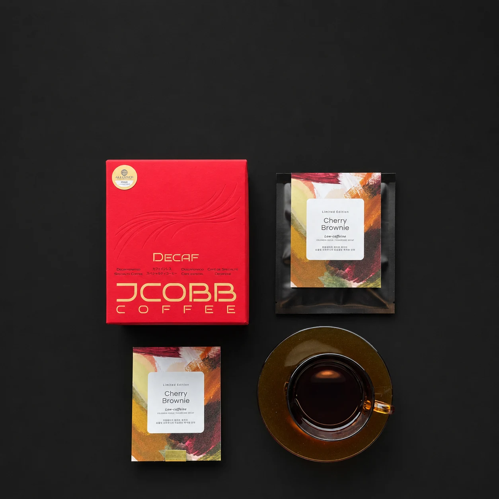

for small cafes
☰
홈
원두·레시피·POP
디카페인 메뉴
테스트빈 신청
INQUIRY
우리 카페에 맞는 디카페인 원두,
먼저 테스트해보세요.
테스트빈 신청 시 원두 상담과 함께 시즌 메뉴 레시피, POP 활용 방향을 안내드립니다.

카페명 *
담당자명 *
연락처 *
지역 *
현재 디카페인 메뉴 운영 여부 *
선택해주세요
운영 중
운영 예정
아직 고민 중
월 원두 사용량
잘 모르겠음
1kg 미만
1~3kg
3~5kg
5kg 이상
관심 제품 *
선택해주세요
디카페인 에스프레소 원두
디카페인 드립백
원두 + 레시피 + POP 패키지
테스트빈 신청
상담 희망 내용
우리 카페에 맞는 디카페인 원두 추천
여름 시즌 메뉴 레시피 상담
매장 POP 활용 상담
드립백 진열 판매 상담
기타
문의 내용
디카페인 테스트빈 신청하기
* 실제 운영 시 이 폼의 제출 연결 주소만 교체하면 됩니다.
신청이 접수된 것처럼 표시되는 데모입니다. 실제 운영 전 폼 백엔드를 연결해주세요.